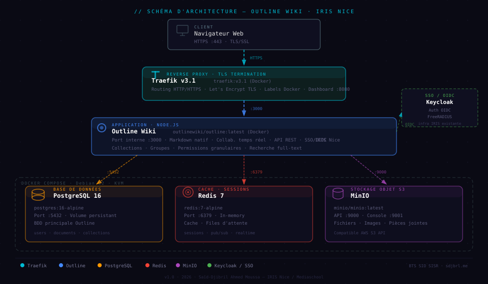
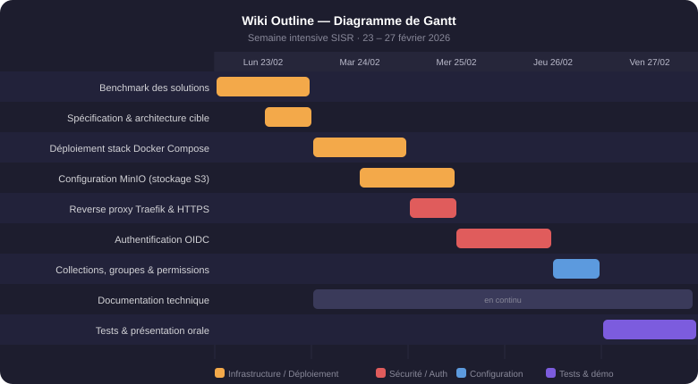

// Applications — Semaine intensive SISR
Wiki Outline
📅 Fév 2026
Documentation technique
Semaine intensive SISR en binôme : déploiement d'Outline (wiki collaboratif) pour centraliser la documentation technique et pédagogique d'IRIS Nice. Stack Docker Compose complète (Outline + PostgreSQL + Redis + MinIO) derrière un reverse proxy Traefik avec TLS. Authentification SSO/OIDC via Keycloak, permissions granulaires par collections et groupes (promotions, formateurs).
Démarche en 3 phases : benchmark de 4 solutions avec grille de critères (Confluence, Notion, BookStack, Outline) → déploiement Docker Compose → intégration IRIS (Traefik HTTPS, SSO Keycloak). Travail en binôme sur 1 semaine intensive. Réseau interne IRIS, port 4433.
Compétences BTS SIO SISR mobilisées
Livrables
- Wiki en production (wiki.iris.a3n.fr)
- Docker Compose complet + .env
- Documentation d'exploitation
- Guide utilisateur formateurs
Critères d'évaluation
Modalités de clôture
Recette à J+7 (semaine intensive). Accès validé par les formateurs. Documentation livrée. Accès sur demande : said.ahmed-moussa@mediaschool.me
Gestion des risques
| Risque identifié | Probabilité | Impact | Mesure de mitigation |
|---|---|---|---|
| Incompatibilité OIDC entre Keycloak et Outline | Élevée | Élevé | POC SSO réalisé dès J2, avant déploiement complet ; documentation officielle Outline/Keycloak suivie |
| Perte de données MinIO (bucket documents) | Moyenne | Élevé | Backup S3 quotidien + dump PostgreSQL planifié par cron (RPO 24h) |
| Dépassement du délai de la semaine intensive | Moyenne | Moyen | Priorisation : SSO fonctionnel d'abord, fonctionnalités avancées ensuite ; suivi Kanban journalier |
| Certificat Let's Encrypt expiré ou non renouvelé | Faible | Moyen | Renouvellement automatique via Certbot (cron) + alerte par email 30 jours avant expiration |
PRA / PCA
docker-compose up + restauration dump PostgreSQLL'architecture 100% Docker Compose est aussi une stratégie de reprise : tous les services (Outline, Keycloak, PostgreSQL, MinIO, Nginx) sont définis dans un seul fichier. En cas de panne serveur, le redéploiement sur un autre hôte ne nécessite que la restauration des volumes (données PostgreSQL + bucket MinIO) et l'exécution de docker-compose up -d.
Annexes


Les comptes sont créés manuellement. Contactez said.ahmed-moussa@mediaschool.me pour un accès de démonstration.